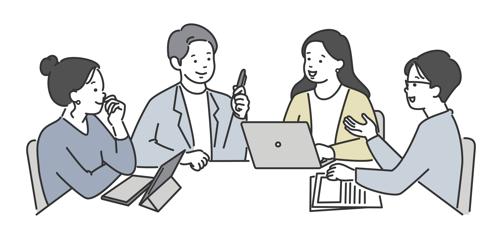

困ったとき、すぐ話せる人がいる。
それだけで、仕事はずいぶん楽になります。
人事・DX・育成のことなら、気軽に声をかけてください。

About Us

人事・経営企画・IT/DX。どれかひとつではなく、その境目を行き来しながら働いてきました。だから、「部署をまたいだ話」が得意です。
採用も、研修も、DXも、突き詰めると同じ課題に行き当たります。「担当者の経験や感覚に頼りすぎていて、仕組みになっていない」ということです。正解を押しつけるのではなく、現状を聞いて、いちばん無理のない仕組みを一緒に考えたい。そういうスタンスでいます。
「こんなこと相談していいのかな」くらいの話が、実はいちばん大事だったりします。気軽に話しかけてください。
Services
「どれに頼めばいいかわからない」——それで正解です。まずは話してみてください。いちばん必要なことから、一緒に整理します。
「経歴を並べただけの研修」では、人は動きません。誰に何を伝えたいのか、その人にどんな"物語"と実績があるのかを一緒に整理してから、研修や講演の中身を組み立てます。新任管理者向け、DXリテラシー向上、キャリア面談——テーマは問いません。座学よりも、その場で考え、話してもらうワークショップ形式を得意としています。
DXは、もう大企業だけの話ではありません。人手が限られる中小企業ほど、効果が出やすい取り組みです。いきなり全社改革を目指すのではなく、まずはバックオフィスなど身近なところから。小さな成功を積み重ねながら、人材不足や採用力の強化にもつながる体制を、現場と一緒につくっていきます。
採用がうまくいかないのは、たいてい「担当者の経験」に頼りすぎているからです。母集団形成から面接の通過率、内定後の辞退理由まで一つひとつ可視化し、属人化しがちな採用活動を、誰がやっても回る仕組みに変えていきます。評価制度づくりや就業規則の見直しなど、必要な部分だけを切り出してお願いすることもできます。
Why BridgeWork
大手に頼むほどじゃない、でも誰かに相談したい——そのちょうど間に、いたいと思っています。
経営企画・人事・IT/DXを、実際に現場で経験してきました。「理屈はわかるけど実態と合わない」という話、よくわかります。だから、地に足のついた話ができます。
採用も、研修も、DXも、「あの人がいなくなったら回らない」状態は意外と多いものです。経験や感覚に頼っていた部分を、誰がやっても再現できる仕組みに変えていきます。
大手向けのパッケージをそのまま持ってきても、合わないことの方が多い。週1日からのスポット対応も、全体を任せる継続支援も、予算と状況に合わせて選べます。
大きな変革は、いきなりは無理があります。まずは取り組みやすいところから着手し、小さな成功を積み重ねる。中長期で付き合っていくつもりで、隣に立ちます。
Process
最初の相談から実際に動き出すまで、4つのステップで進みます。難しい手続きはありません。
30分ほど、いまどんな状況か、何が気になっているかをそのまま聞かせてください。フォームから気軽にどうぞ。
聞いた内容をもとに、何が課題で、どこから手をつけるべきかを整理します。そのうえで、具体的な進め方を提案します。
月次での継続支援か、スポットでの対応か。会社の状況に合わせて、やりやすい形で動き始めます。
やってみてどうだったかを一緒に振り返り、必要なら方向を調整しながら、課題の解決まで付き合います。
Contact
「こんなこと相談していいのかな」で、ちょうどいいです。話してみると、意外とすっきりすることが多いので。